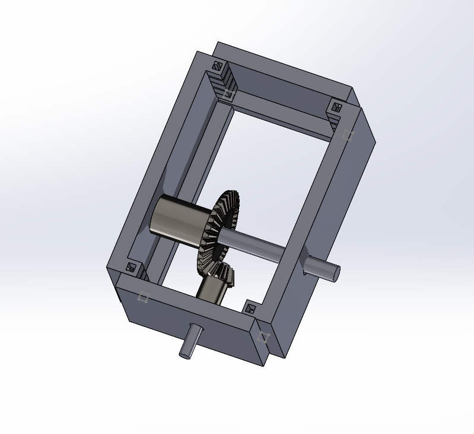
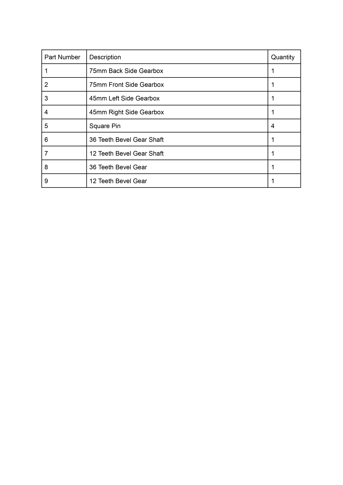

We designed a speed reduction gearbox with a practical 3:1 speed ratio, utilizing a fully 3D-printed approach for all components. We assembled the printed parts without involving any special tools in short time effeciently. We subjected our design to testing with the Teaching Assistant. We applied rotational force to the input, and observed the gearbox translating the motion from the motor to the speed reduced output. Impressively, the design not only effectively handled the applied force but also demonstrated sustained functionality, surviving for over 30 seconds during the testing.
 